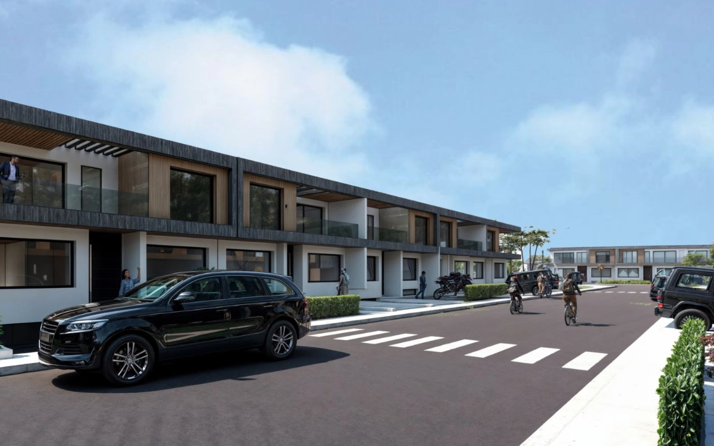
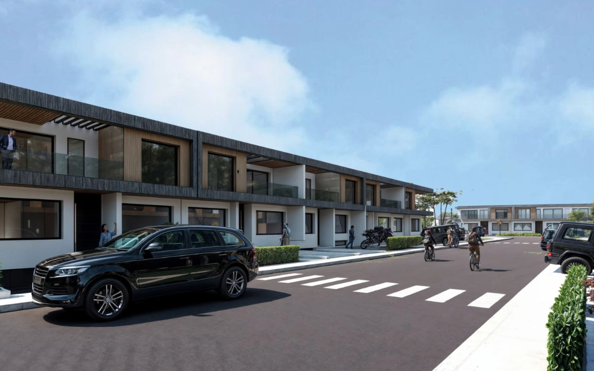
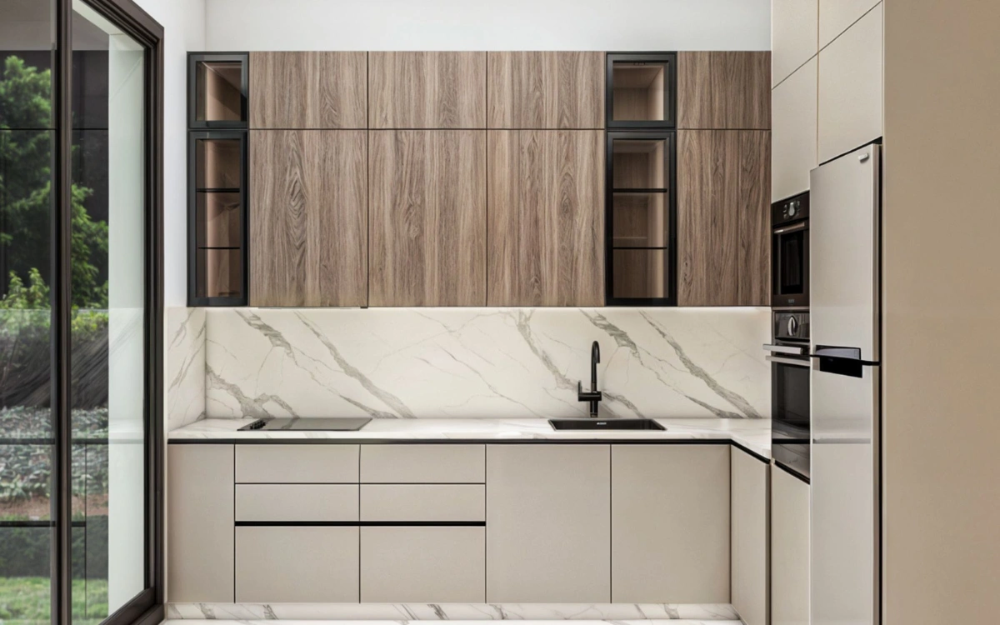
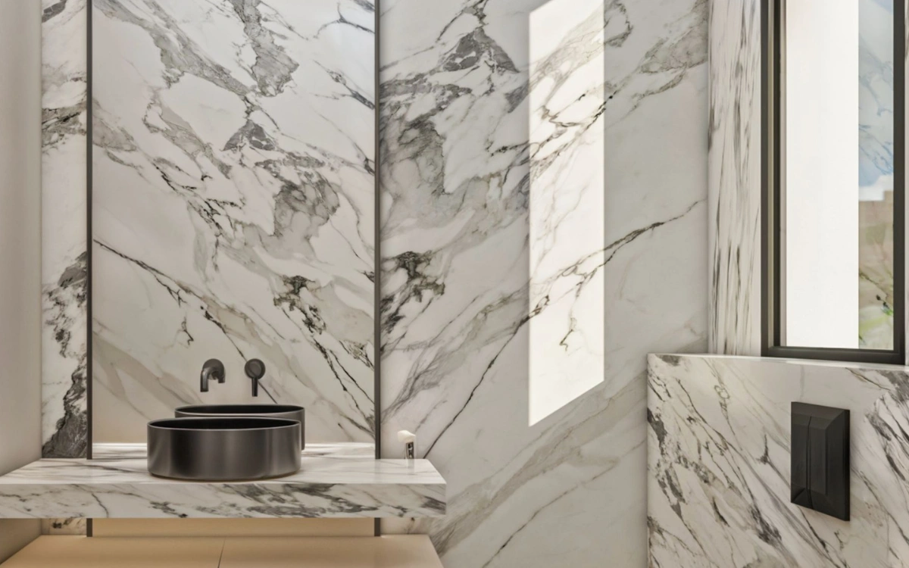
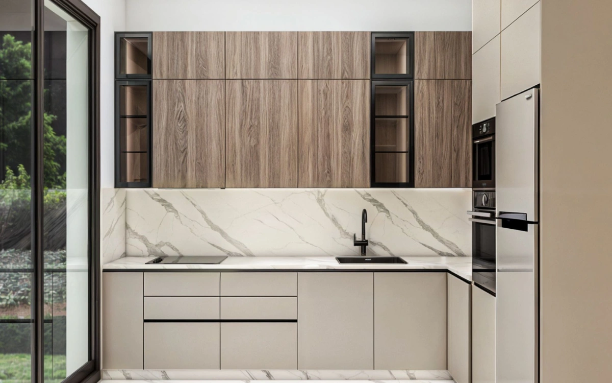
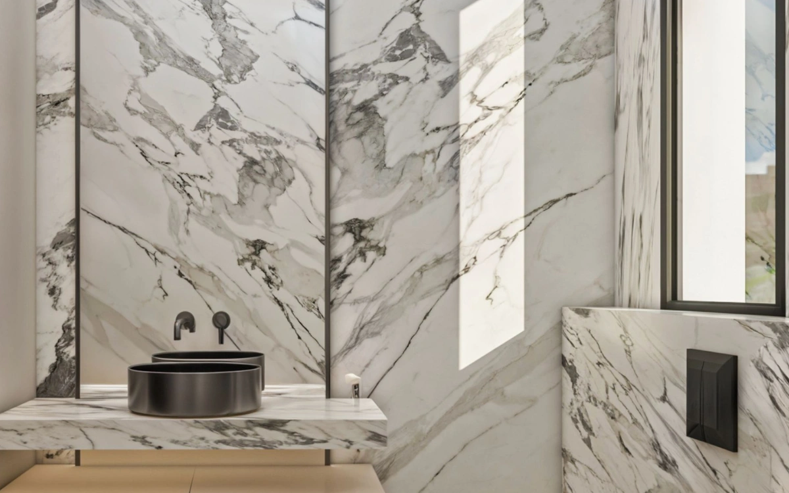
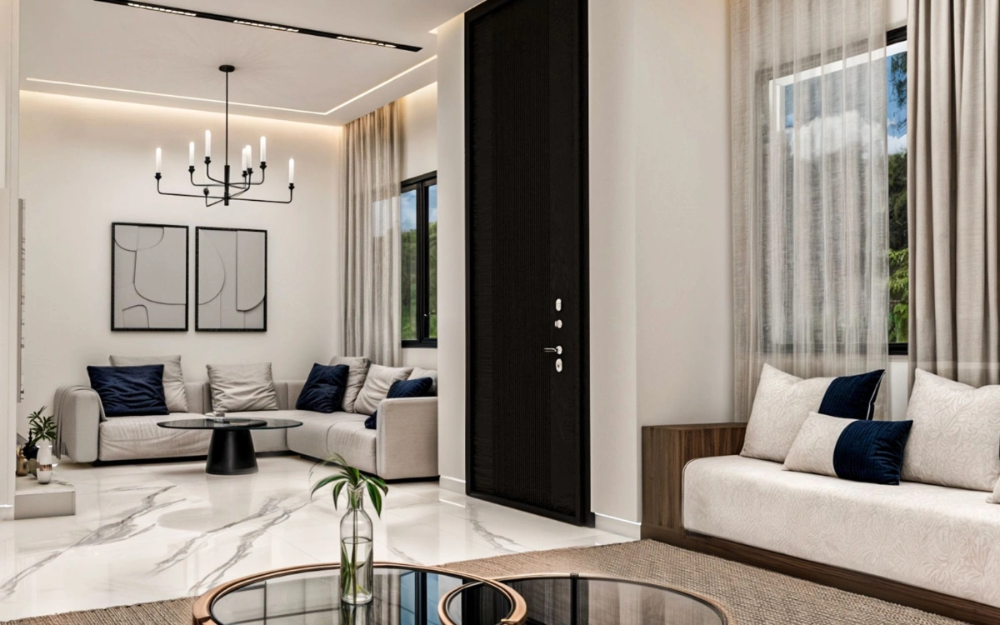
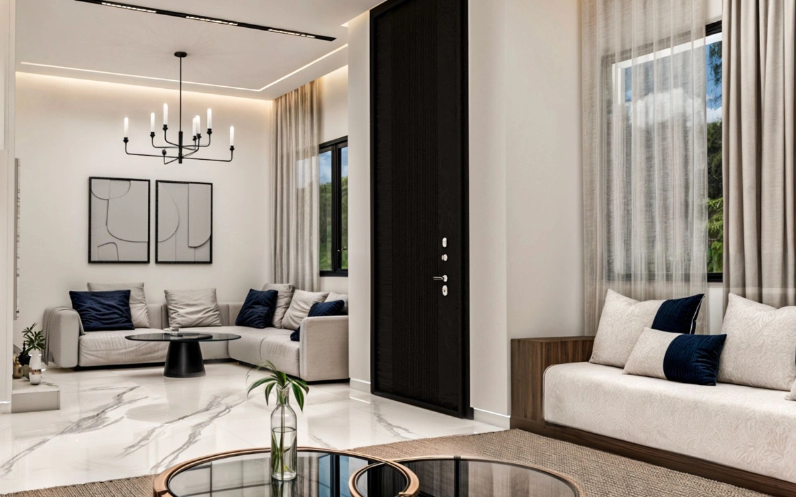
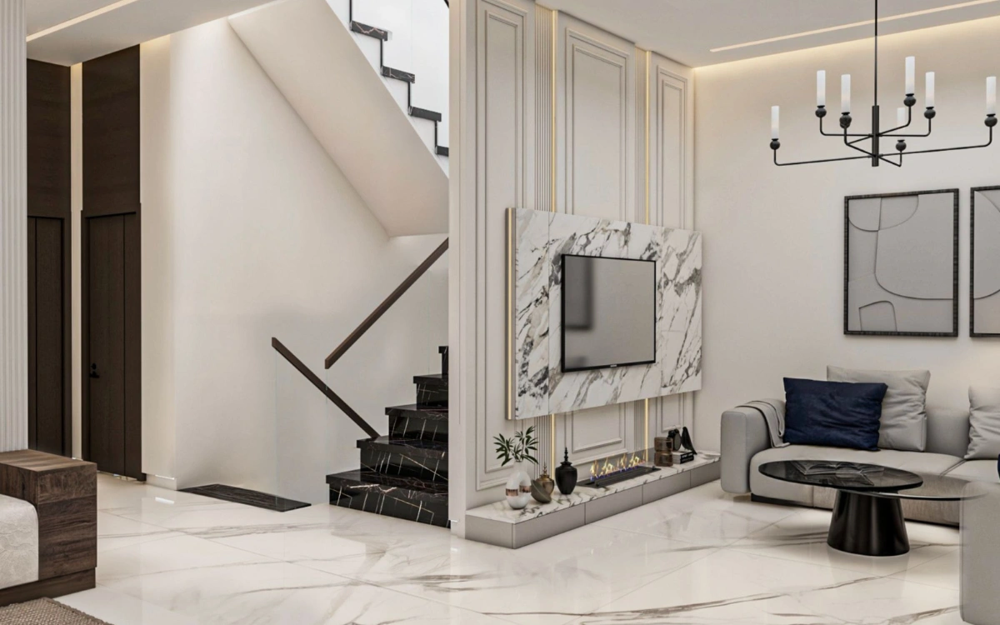
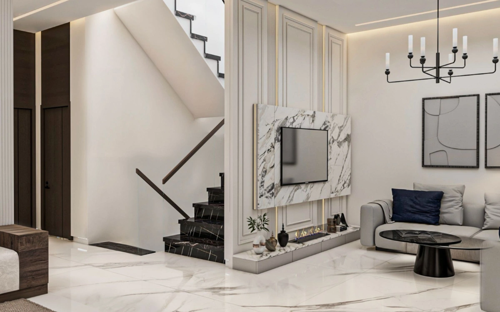

Description
Achakar Gardens est un projet résidentiel prestigieux de villas modernes et luxueuses, situé dans l’un des quartiers les plus recherchés de Tanger.
À proximité d’Achakar Beach, du Cap Spartel et des Grottes d’Hercule, le projet offre un cadre naturel et un accès rapide au centre‑ville.
Équipements
- Piscine privée et commune
- Grands jardins et terrasses
- Aire de jeux pour enfants
- Salle de sport privée
- Parking souterrain
Finitions & matériaux
- Parquet et bardage en bois
- Faux plafond en plâtre
- Marbre gris
- Isolation thermique et phonique
- Climatisation centralisée
- Sanitaires Jacob Delafon
- Double vitrage
Pourquoi investir
- Fort potentiel locatif proche des plages et zones touristiques
- Style de vie luxueux en environnement sécurisé
- Valorisation dans un quartier en pleine croissance
Galerie photo
 

 



 

 
